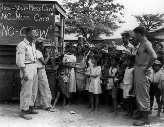

Dahil sa pagnanais ng mga Pilipino na mapatalsik ang mga Kastila, naging tagapagsagip ang mga Amerikano nang dumating sila noong 1898 na tuluyang nagpabagsak sa pamahalaang Kastila. Kung relihiyon ang naging pamana ng mga Kastila sa Pilipino,
edukasyon naman ang naging pangunahing ipinamana ng mga Amerikano. Sa panahong ding ito isinilang ang mga ilang imortal na makatang Pilipino na nagsisulat sa Ingles at Tagalog.
Sa mga unang taon ng pananakop ng Amerikano sa bansa, sumulat ang mga Pilipino sa Kastila, Tagalog at iba pang wikang panlalawigan. Nagsimula lamang umusbong ang mga panitikan sa Ingles noong 1910 dahil sa mga bagong silang na manunulat.\
Kabilang sa mga manunulat sa panahong ito sina Cecilio Apostol na sumulat ng mga oda para kay Rizal; Claro M. Recto na naging tanyag sa kanyang natatanging mga talumpati; si Lope K. Santos na sumulat ng obra-maestrang “Banaag at Sikat”
at nagpauso ng panitikang sosyalista; si Jose Corazon de Jesus na tinaguriang Makata ng Pag-ibig at may panulat-sagisag na ‘Huseng Batute;’ at si Jose dela Cruz na may panulat-sagisag na ‘Huseng Sisiw’ dahil sisiw ang ipinababayad kapag
nagpapagawa sa kanya ng tulang pag-ibig; si Severino Reyes na sumulat ng imortal na dulang “Walang Sugat” at tinaguriang Ama ng Dulang Tagalog; si Zoilo Galang na pinakaunang nobelistang (A Child of Sorrow) Pilipino sa Ingles at maraming-marami
pang iba. Ang mga Amerikano ang nagpakilala ng mga fairy tale sa mga Pilipino na ginamit ng mga gurong Tomasites sa pagtuturo.Ipinakilala rin ng mga ito ang iba pang uri (genre) ng panitikan gaya ng oda at nagpakilala sa pinilakang-tabing
– ang pelikula.
Reference: http://kadipanvalsci.blogspot.com/2010/08/panitikang-filipino-sa-ibat-ibang.html